What's our deal?
Dollar Lunch Club is a community at UCSD that cooks and eats together in pursuit of food justice through mutual aid and sustainable practices.
We are composed of graduate and undergraduate students from many departments and backgrounds. We invite faculty, staff, and any other members of the San Diego community who'd like to join us.
Can I come to Dollar Lunch?
Yes you can! We'd love to have you. Whether you're an undergrad, a janitor, a teaching assistant, a grad student, a construction worker, or just passing through, you're welcome to join us.How do I hear about Dollar Lunches that are happening soon?
The most consistent way to hear about our lunches is through our Instagram, which you can find at @dollar_lunch_club . You can check the Google Calendar embedded below, although currently Instagram is our priority. We also try to email department mailing lists, ping Slacks, and tell our friends. If all else fails, try emailing dollar dot lunch dot club dot ucsd @ gmail dot com
How much do I have to pay?
There's no "have to" here - mutual aid is about giving what you can, and taking what you need, while forming strong community bonds. No matter your circumstances: if you're hungry, or you want to make new friends, we invite you to join us.To share the work and costs associated with Dollar Lunch, you could:
- help wash dishes
- give produce, dry goods, or cooking implements you don't need
- give $1 to $5
- volunteer to plan or prep for the next meal
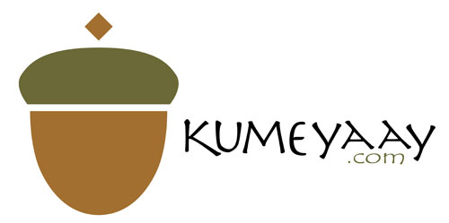
We respectfully acknowledge the Kumeyaay people, whose violently stolen land we live, work, cook, and learn on.
We hope to work towards a future in which we collaborate with the Kumeyaay on stewardship and love of this land; and a future in which the violence of the United States-Mexico border does not divide us from our neighbors.
To learn more about where DLC came from, how we organize, and our community goals, check out our interview by our friend James on the It Could Happen Here podcast, embedded below!
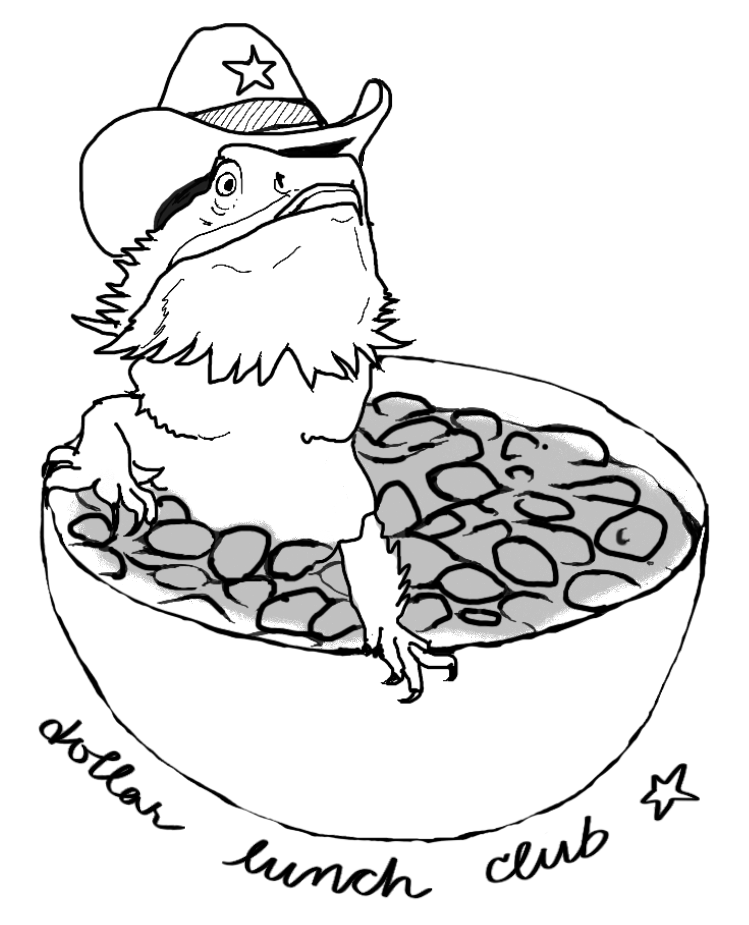
Check out our friends & neighbors
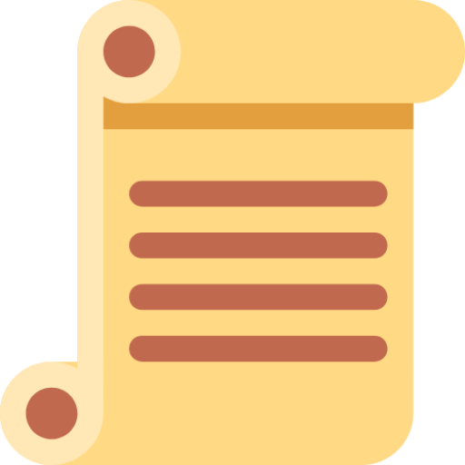 UCSD History Department
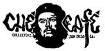 Che Cafe
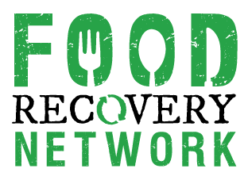 Food Recovery Network
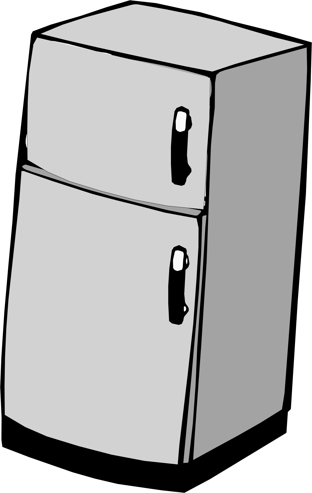 Che Community Fridge
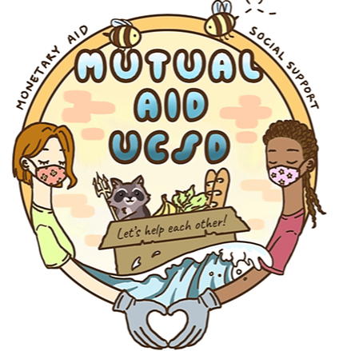 UCSD Mutual Aid Collective
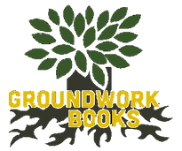 Groundwork Books
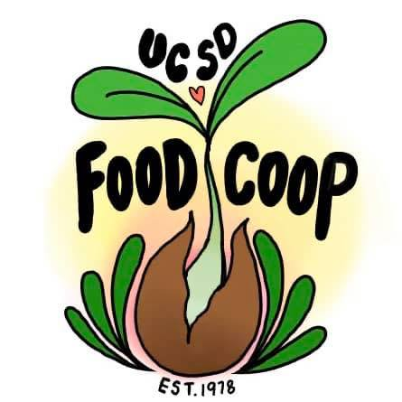 UCSD Food Co-Op
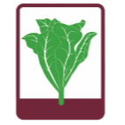 Roger's Community Garden
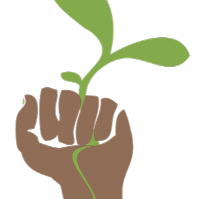 UCSD Student Sustainability Collective
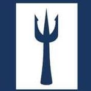 Triton Food Pantry